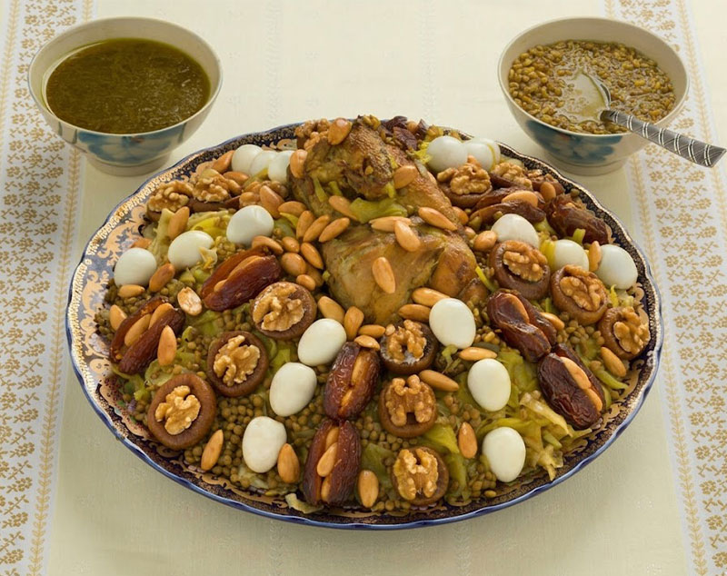

Home
Moroccan Rfisa

Description
Often made for special occasions or celebrations like the birth of a new baby, this is a very special Moroccan dish that has different versions; the one we will be making being the regular Rfisa that requires "msemmen". It takes time to prepare but is so delicious.
Ingredients
- 4 chicken breasts or any other cuts of chicken
- 1 medium onion chopped finely
- 1 teaspoon saffron threads crumbled slightly and soaked in warm water
- palm size bunch of flat-leaf parsley or cilantro (or both)
- 1 teaspoon each salt and pepper
- 1 tablespoon minced ginger
- 1 ½ teaspoon "ras al hanout"
- ¼ cup uncooked lentils (soak overnight)
- 3 cups water
- ¼ cup olive oil
- 6-10 cooked msemmen (depends on size)
Instructions
- If using dried garbanzo beans, soak in a bowl of water overnight.
- In a heavy bottomed soup pot, add the oil, chopped onion, diced meat, half of the cilantro & parsley, salt, pepper, and ginger.
- Sauté on medium high heat for 5-10 minutes or until the meat is browned and the onion translucent.
- Drain the garbanzo beans and add to the pot with the tomato puree and water. Bring the liquid to a boil then cover, lower and simmer for 25-30 minutes or until the garbanzos and meat are cooked through.
- In a small pot add lentils and cover with water. Bring to a boil, then cover and lower to a simmer for 15 minutes. Turn off the heat and set aside while you wait for the soup to be done.
- Optional: In a small bowl mix together cornstarch and cold water until no clumps remain. Uncover the soup and mix in the cornstarch water slurry to thicken.
- Finally, add noodles (or rice), strained lentils and remaining cilantro & parsley. Cook until the noodles (or rice) are done. Serve with a sprinkle of fresh cilantro and enjoy!